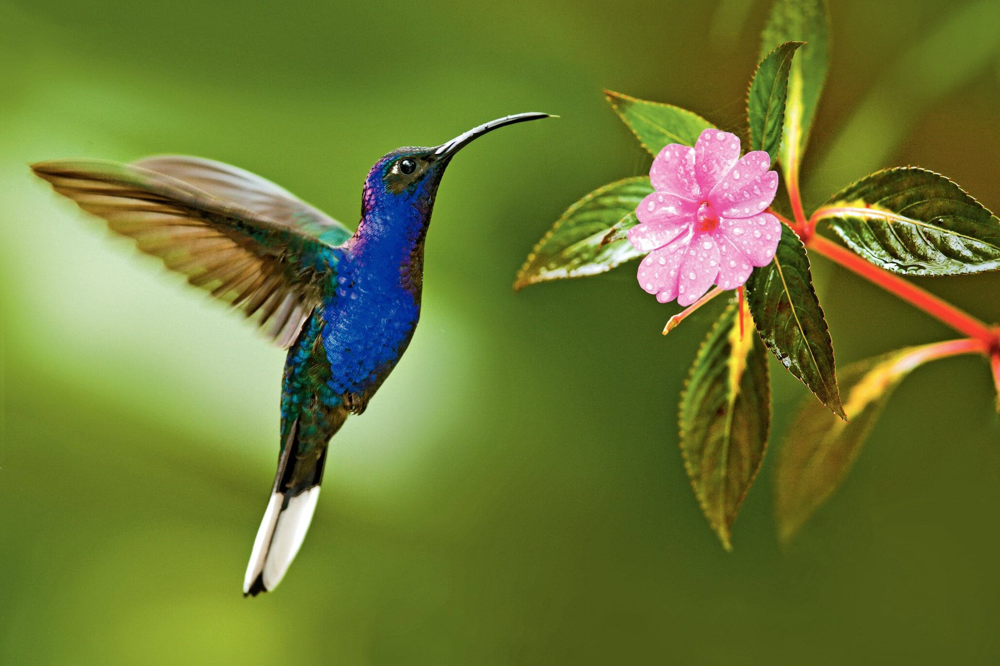

Nataisia Hambidge
Nataisiah03@gmail.com
206-413-0870
LinkedIn
Objective
Seeking a challenging UX design internship opportunity to apply my passion for user-centered design principles, creative problem-solving abilities, and proficiency in tools such as Figma and user research methodologies, while actively contributing to the creation of intuitive and engaging digital experiences.
Education
Shoreline Community College September 2019 - June 2022
- Running Start
University of Southern California May 2025
- B.A. Cognitive Science
Experience
University of Southern California August 2023-Present
Student Worker
- Worked closely with professors and educational design teams to problem solve.
- Remediated BUAD 304 Blackboard and course content for a visually impaired student.
- Utilized Microsoft accessibility tools.
Sellen Construction July 2021-Sept. 2021
Talent Acquisition Intern at Sellen Construction
- Worked with HR, Marketing, and Engineering teams to enhance diversity in the workplace.
- Conducted outreach to engineering programs at colleges, facilitating recruitment of students of color.
- Contributed to promoting inclusion and diversity within the company.
Cyborg Mobile + Microsoft June 2022 - August 2022
New Technologist Intern
- Applied design thinking to create innovative solutions for problem statements.
- Developed proficiency in React, JavaScript, CSS, and Git
- Collaborated with a team to deliver feasible applications and websites.
Skills/Qualifications
- Microsoft Office Suite
- Google Workspace
- Strong Communication Skills
- Great Customer Service